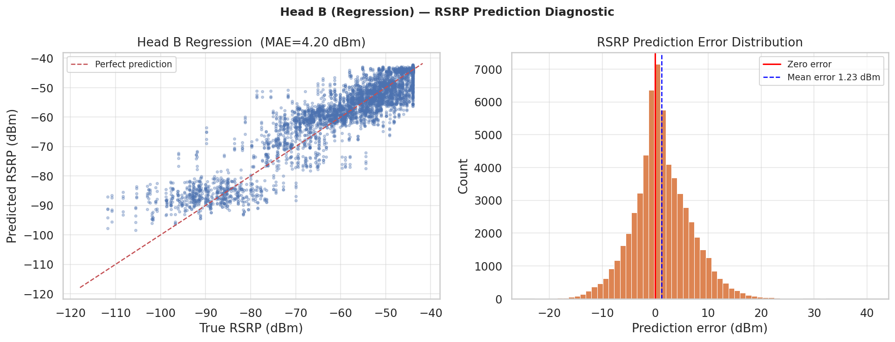
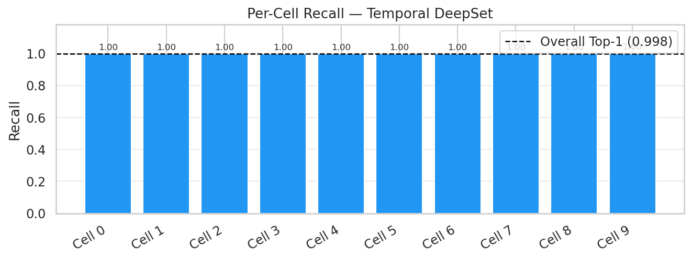

Training Reference
This page describes the full training methodology applied across the experimentation pipeline: data preprocessing, loss functions, learning rate scheduling, evaluation protocol, and per-experiment training specifics. All production experiments (Exp 02–07) target 5-step future horizon prediction. Only Exp 01 is a single-step baseline.
1. Data Pipeline
1.1 Raw Data Sources
Dataset |
Path |
Description |
|---|---|---|
Hexagonal simulation |
|
Large-scale UMi channel model dataset (primary training corpus) |
Ray-tracing simulation |
|
High-fidelity ray-tracing dataset (fine-tuning / Exp 06–07) |
1.2 UE-Level Train/Val/Test Split
All experiments use a UE-level split loaded from dataset/processed/ue_split.json. This prevents temporal leakage — a UE’s data appears in exactly one partition. Typical split ratios are 70/15/15.
# UE-level split prevents time leakage across train/val/test
with open("dataset/processed/ue_split.json") as f:
ue_split = json.load(f)
train_ues = ue_split["train"] # ~70% of UE trajectories
val_ues = ue_split["val"] # ~15%
test_ues = ue_split["test"] # ~15% ← never seen during training
1.3 Sliding Window Construction
Each sample is a sliding window of OBS_STEPS consecutive timesteps (sampled every 200 ms):
[ t-(T-1) ... t-1 t ] ──► Predict optimal cell at [ t+1, t+2, t+3, t+4, t+5 ]
The window shape is (K, T, F):
K = MAX_CELLS = 10— padded candidate cell setT = OBS_STEPS— 25 or 200 timesteps depending on experimentF— feature count (3–5 depending on experiment)
1.4 Neighbor-Axis Shuffling (Anti-Leakage)
A critical anti-leakage measure is applied to every sample: the K candidate cells are randomly permuted before caching, and the label is remapped accordingly. This prevents the model from learning the trivial shortcut of “index 0 is always optimal” (which was an artefact of score-sorted raw CSVs).
# Applied per window in all production experiments
perm = rng.permutation(MAX_CELLS)
X = X[perm] # (K, T, F) shuffled
label = inv_perm[label] # label index remapped after shuffle
1.5 Feature Schema
Feature |
Description |
Included in |
|---|---|---|
|
Neighbor cell RSRP (dBm) |
All experiments |
|
Neighbor cell SINR (dB) |
All experiments |
|
Neighbor cell load (0–1) |
All experiments |
|
LTE anchor serving-flag |
Exp 03, 04, 06 |
|
UE mobility state |
Exp 05 |
Cell ID integers |
Discrete cell identifiers |
Exp 07 (ID embedding) |
2. Loss Functions
2.1 Focal Loss
All classification heads use Focal Loss to handle class imbalance across the 172 candidate cells:
Where:
\(\alpha\) focuses on the minority class (positive handover events)
\(\gamma\) down-weights easy (well-classified) samples
Experiment |
γ |
α |
|---|---|---|
Exp 01–05 |
2.0 |
0.25 |
Exp 06 (fine-tune) |
2.0 |
0.25 |
Exp 07 (CrossFormer) |
1.5 |
0.75 |
2.2 Auxiliary Regression Loss (Huber / MSE)
Multi-task experiments (03, 04, 05) add a signal regression head with a Huber or MSE loss:
Experiment |
λ_cls |
λ_reg |
|---|---|---|
Exp 03 |
1.0 |
0.5 |
Exp 04 |
1.0 |
0.7 |
Exp 05 |
1.0 |
0.5 |
2.3 Label Smoothing
Applied to the classification target to regularise overconfident predictions:
Experiment |
Label Smoothing |
|---|---|
Exp 01 |
0.10 |
Exp 02 |
0.10 |
Exp 06 (fine-tune) |
0.02 |
Exp 07 (CrossFormer) |
0.01 |
3. Learning Rate Scheduling
3.1 Warmup + Cosine Decay (Exp 01–06)
A linear warmup phase is followed by cosine decay, providing stable early-epoch convergence and smooth annealing:
Epochs 0 → LR_WARMUP_EP : linear ramp from 0 → LR_INIT
Epochs LR_WARMUP_EP → LR_DECAY_EP : cosine decay to LR_MIN
Epochs LR_DECAY_EP → EPOCHS : flat at LR_MIN
Experiment |
LR_INIT |
Warmup Epochs |
Decay Epochs |
Total Epochs |
|---|---|---|---|---|
Exp 01 |
1e-3 |
4 |
20 |
60 |
Exp 02 |
1e-3 |
4 |
20 |
60 |
Exp 03 |
1e-3 |
4 |
20 |
60 |
Exp 04 (Optuna) |
1.68e-3 |
5 |
25 |
60 |
Exp 05 |
5e-4 |
4 |
20 |
60 |
3.2 ReduceLROnPlateau + EarlyStopping (Exp 07 — CrossFormer)
The Ray-ID CrossFormer uses a simpler ReduceLROnPlateau callback with early stopping, more appropriate for the smaller ray-tracing dataset:
ReduceLROnPlateau(monitor='val_loss', factor=0.5, patience=7, min_lr=2e-6)
EarlyStopping(monitor='val_top3_accuracy', patience=14, restore_best_weights=True)
Parameter |
Value |
|---|---|
Initial LR |
3e-4 |
Min LR |
2e-6 |
Patience (early stop) |
14 |
Total epochs |
90 |
4. Training Infrastructure
4.1 Hardware & Framework
Item |
Detail |
|---|---|
Framework |
Keras 3 / TensorFlow 2.x backend |
Mixed precision |
|
Dataset API |
|
Experiment tracking |
MLflow ( |
TensorBoard logs |
|
4.2 Dataset Caching
All experiments pre-build a numpy cache to avoid repeated windowing:
dataset/
├── temporal_deepset_cache/ # Exp 01
├── temporal_deepset_production_cache/ # Exp 02
├── mtl_cache/ # Exp 03
├── 6g_cache/ # Exp 04
├── strategic_cache/ # Exp 05
├── ray_tracing_finetune_cache/ # Exp 06–07
└── processed/ue_split.json # shared UE split
4.3 Callbacks
Every experiment uses the following standard callback set:
ModelCheckpoint(filepath='models/best_<exp>.keras',
monitor='val_top3_accuracy', # primary monitor
save_best_only=True)
TensorBoard(log_dir='tb_logs/<exp>/')
CSVLogger('metrics/<exp>/training_log.csv')
val_top3_accuracyas the checkpoint monitor — Top-3 accuracy is used as the primary validation monitor because it is the most operationally relevant metric in production. The NR network uses the top-3 predicted candidates for X2/Xn preparation, so optimising for Top-3 directly aligns training with deployment objectives.
5. Experiment Training Details
Exp 01 — Temporal DeepSet (Single-Step Baseline)
⚠️ This is the single-step selection experiment. The model predicts the best current cell. It is used as a proof-of-concept baseline and was the first modeling experimentation in this project. All subsequent experiments solve the harder 5-step future prediction problem.
conda run -n tda-handover python src/train_model.py --label optimal

Exp 02 — SpatioTemporal DeepSet Production
First transition to 5-step multi-horizon prediction. Uses a long 200-timestep observation window (40 seconds of history at 200 ms resolution) and a multi-task loss combining future cell classification and signal regression.


Exp 03 — MTL Set Transformer
Introduces self-attention over the cell dimension. RSRP regression diagnostic:


Exp 04 — 6G Predictive (Optuna-Tuned)
Optuna runs 50 trials with Tree-structured Parzen Estimator (TPE) sampler to find optimal LSTM_UNITS, N_HEADS, DROPOUT, and LR_INIT. Best epoch: 19.

Exp 05 — Strategic DeepSet (Context Injection)
Injects global UE context (speed, dir_cos, dir_sin, cell_load, ho_class_onehot) into the cell aggregation to make the model mobility-regime-aware.

Exp 06 — Ray-Tracing Fine-Tune (Progressive Unfreezing)
Three-phase progressive fine-tuning on the ray-tracing domain. Uses a temperature-scaled calibration (T=1.1) post-training.
Phase 1 (25 ep, LR=1e-4): head only → val top-3 ↑
Phase 2 (25 ep, LR=5e-5): upper blocks → continued improvement
Phase 3 (15 ep, LR=1e-6): full model → final adaptation

Exp 07 — Ray-ID CrossFormer (SOTA / Production)
The production training run. Trained directly on the ray-tracing cache with cell-ID embeddings. Converges in ~60–70 effective epochs under early stopping.
# Training (from project root, inside the tda-handover conda env)
conda run -n tda-handover python -m notebooks.modeling.07_ray_id_crossformer


6. Evaluation Protocol
6.1 Metrics
Metric |
Formula |
Role |
|---|---|---|
Top-1 Accuracy |
\(\Pr[\hat{y}_1 = y]\) |
Exact match — hardest metric |
Top-3 Accuracy |
\(\Pr[y \in \{\hat{y}_1, \hat{y}_2, \hat{y}_3\}]\) |
Primary production KPI |
Top-5 Accuracy |
\(\Pr[y \in \text{top-5}]\) |
Coverage ceiling |
RSRP MAE (dBm) |
$\text{E}[ |
\hat{r} - r |
6.2 Why Top-3 Is the Primary Production Metric
In a live 5G NR deployment, the edge-AI inference does not issue a single hard handover command. Instead, it returns a ranked candidate list to the RAN controller (via X2/Xn interface), which then selects the best reachable candidate based on:
live X2/Xn resource availability,
QoS profile matching,
load constraints on the candidate cell.
This means the network can exploit the top-3 predicted candidates, not just the single best prediction. A Top-3 accuracy of 90.87 % (CrossFormer) means the optimal target cell is presented in the candidate shortlist in 9 out of 10 handover events, essentially eliminating blind handover failures in production.
6.3 Evaluation Script
# Evaluate CrossFormer on ray-tracing test split
conda run -n tda-handover python src/evaluate_model.py \
--model models/best_ray_id_crossformer.keras \
--label optimal
6.4 Per-Cell Recall
Per-cell recall plots expose which cells are systematically confused — useful for identifying coverage holes, highly loaded cells, or geo-clusters with ambiguous candidates:

7. Production Source Modules
The src/production/ directory contains reusable Python modules that mirror notebook logic in a script-friendly, reproducible form:
Module |
Description |
|---|---|
|
Windowed cache builder + scaler for DeepSet experiments |
|
Keras model builder + loader (with custom |
|
TTT + margin + cooldown stability gate |
|
Multi-horizon cache builder for transformer experiments |
|
Multi-horizon transformer model builder |
|
Train TemporalDeepSet (single-step baseline) |
|
Train multi-horizon transformer |
|
Evaluate and write metrics JSON |
|
Offline streaming inference + stability gate |
Inference entry point uses
models/best_ray_id_crossformer.kerasas the default production model. Thesrc/inference.pyscript runs per-UE rolling-window inference with the stability gate (TTT=3 steps, margin=0.15, cooldown=5 steps).